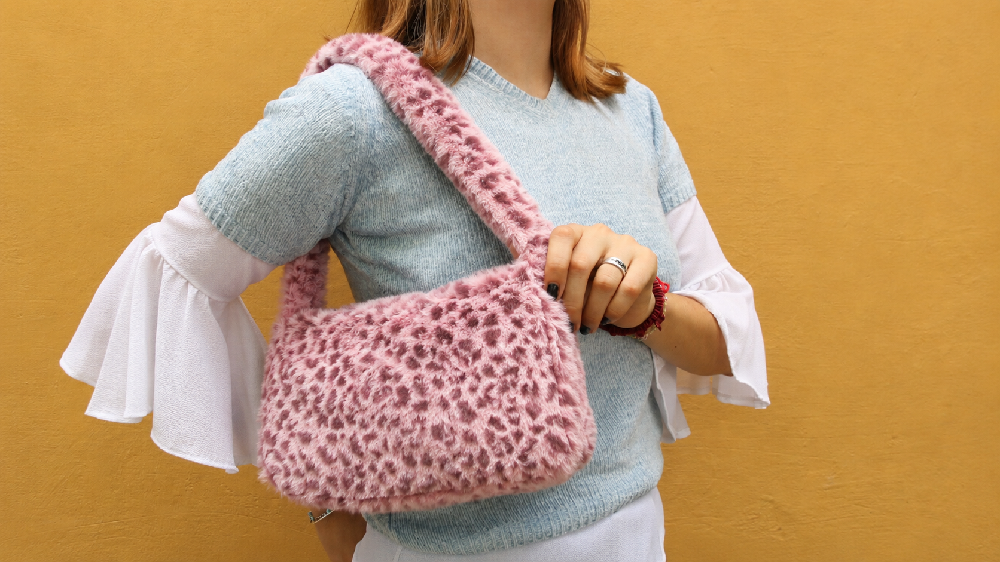
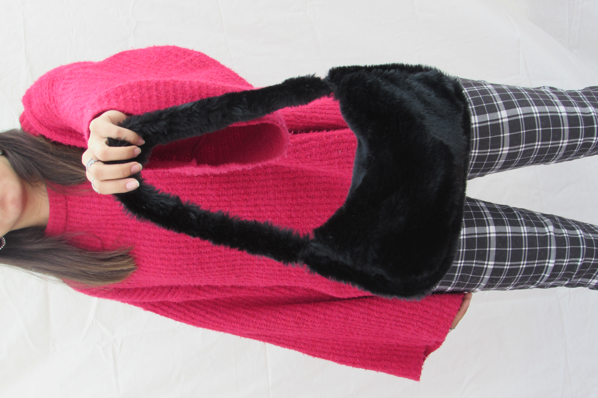

Uno de los primeros diseños de la marca. El animal print aporta personalidad y convierte a esta cartera en una pieza protagonista dentro de cualquier look.

Inspirada en la estética Y2K, combina colores suaves con detalles llamativos para crear un accesorio moderno y original.

Un diseño versátil pensado para el uso diario, donde la comodidad y la funcionalidad se combinan con una estética urbana.
Estas fueron algunas de las primeras carteras que diseñé cuando comencé a experimentar con la confección y el diseño de accesorios.
La inspiración principal surgió de la estética Y2K y de la moda de los años 2000, una época caracterizada por los accesorios llamativos, los colores vibrantes y la libertad para expresar la personalidad a través de la moda.
Aunque estos fueron mis primeros trabajos, marcaron el comienzo de la identidad visual de Vecchio Gil y sentaron las bases de la marca.